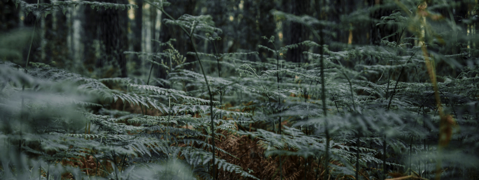

Детство, ты куда бежишь?.. Это наш первый сборник группы авторов ЛитРес Самиздат. Вас здесь ждут тёплые рассказы. Возможно, вы вспомните и свою трогательную историю. Те минуты радости катания с горки. Разочарования от двойки. Первой любви. Познания жизни. Как справлялись с проблемами. Что делали, когда оступились. Как пережили первые потери. Все схожие события смогли оценить с высоты прожитых лет – писатели, которые тоже были маленькими. Ответы кроются в их рассказах.
Минута – и нет их, будто и не было тут никого
сотни лет...
Какой чудесный, добрый, светлый сборник! Прочитала с удовольствием, спасибо авторам, что делятся с нами детством, пусть и выдуманным, но таким милым и позитивным. И спасибо ЛитРес, что собирает такие сборники и дает возможность читать их бесплатно!
Невероятно интересные рассказы авторов. Я рада быть в группе таких тонко чувствующих этот мир людей. Каждый рассказ просто космос, который хочется покорить. Здесь и мистика, и фантастика, и юмор, и .... спамить не хочу. Окунитесь в детство с авторами и столько всплывет воспоминаний у вас и вы оцените их с высоты вашего возраста. Молодцы! Потрудились на славу. Так не хватает таких душевных историй. И вот они уже на ЛитРес.
Какая интересная инициатива! Команда творческих людей это всегда замечательная идея. А добрые книги сейчас очень нужны. Они снова заставляют нас мечтать. Рекомендую!
Рада была поучаствовать в сборнике. Авторы и их рассказы интересны широкому кругу читателей. Мой рассказ - реальная история из жизни, хотя в основном я пишу историческую прозу.